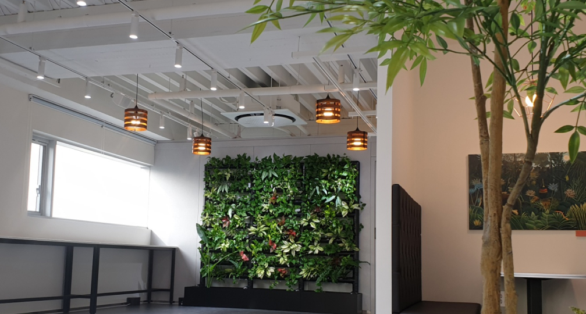
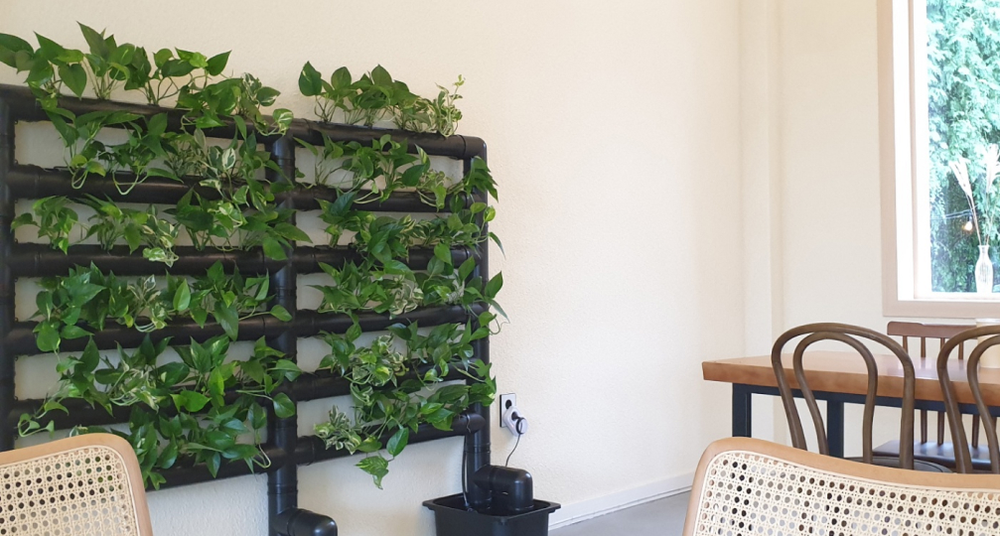
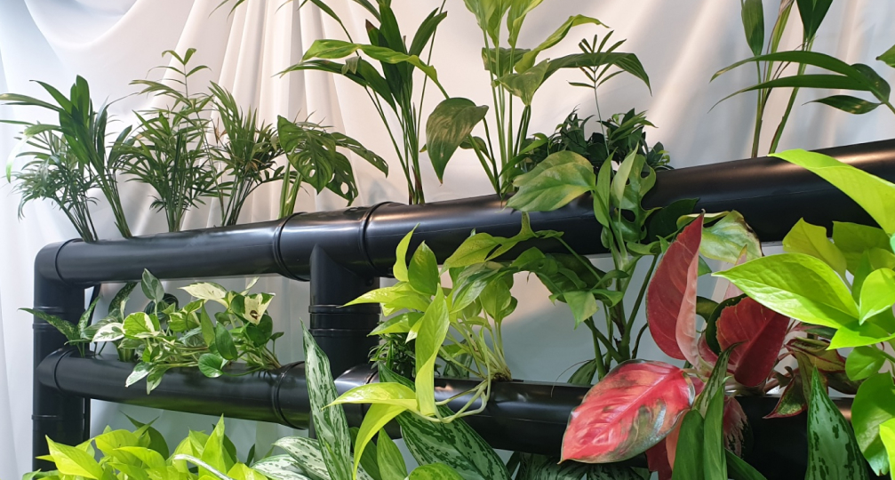

부활피앤피의
프로젝트
를
소개해 드립니다.

REVIVAL PLASTIC PROJECT I
<친환경 플라스틱 수직정원>
버려진 일회용기 1,000개를 재활용한 친환경 수직정원을 소개합니다.
more

REVIVAL PLASTIC PROJECT II
<친환경 플라스틱 수직정원>
버려진 일회용기 1,000개를 재활용한 친환경 수직정원을 소개합니다.
more

REVIVAL PLASTIC PROJECT III
<친환경 플라스틱 수직정원>
버려진 일회용기 1,000개를 재활용한 친환경 수직정원을 소개합니다.
more
부활피앤피의
새로운 소식
과
플라스틱의 이야기
를 들어보세요.
부활피앤피에게
궁금한 사항
을
간편하게 문의해보세요.
부활피앤피에게 궁금한 사항을 문의해주세요